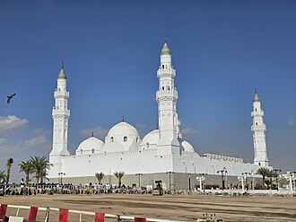

Voorstelling
La mosquée de Quba, à environ 3 km au sud du centre-ville de Médine en Arabie saoudite, aurait été la première mosquée construite, juste après l'exil (hégire) du prophète de l'islam Mahomet et de ses compagnons. Mahomet aurait passé plus de vingt nuits dans ce lieu de prière.
مَسْجِدُ قُبَاءٍ أول مسجد بُني في الإسلام، وأول مسجد بُني في المدينة النبوية، ومن حيثُ الأوليةُ فإن المسجد الحرام أول بيت وُضِعَ للناس ومسجد قُباء أول مسجد بناه المسلمون، وهو أيضًا أكبر مساجد المدينة بعد المسجد النبوي. يقع المسجد إلى الجنوب من المدينة المنورة، وبناه النبي محمد ﷺ حين هاجر من مكة متوجهًا إلى المدينة، وقد اهتمَّ المسلمون من بعده بعِمارة المسجد في العصور التالية، فجدَّده عثمان بن عفان، ثم عمر بن عبد العزيز في عهد الوليد بن عبد الملك، وتتابع الخلفاءُ من بعدهم على توسيعه وتجديد بنائه؛ ووسَّعه السلطان قايتباي، ثم تبعه السلطان العثماني محمود الثاني وابنه السلطان عبد المجيد الأول، حتى كانت التوسعة الأخيرة في عهد الدولة السعودية.
The Quba Mosque is a mosque located in Medina in the Hejaz region of Saudi Arabia, first built in the lifetime of the Islamic prophet Muhammad in the 7th century. It is thought to be the first mosque in the world, established on the first day of Muhammad's emigration to Medina. Its first stone is said to have been laid by the prophet, and the structure completed by his companions. The mosque was subsequently modified across the centuries until the 1980s, when it was completely replaced by a new building that stands today.
Kuba Mescidi veya Mescid-i Kubâ, İslam Peygamberi Muhammed'in Mekke'den Medine'ye hicret ederken konakladığı Kubâ'da inşa ettirdiği, inşaatında kendisinin de bizzat çalıştığı İslam'da inşa edilen ilk mescit.
Masjid Quba adalah masjid pertama yang dibangun oleh Rasulullah saw. pada tahun 1 Hijriyah atau 622 Masehi di Quba, sekitar 5 km di sebelah tenggara kota Madinah. Dalam Al Qur'an disebutkan bahwa Masjid Quba adalah masjid yang dibangun atas dasar takwa.
مسجد قبا اسلام کی تاریخ کی سب سے پہلی مسجد ہے، جو مدینہ منورہ سے تین کلومیٹر کے فاصلے پر واقع بستی قبا میں واقع ہے اور جسے رسول اللہ ﷺ نے ہجرت کے موقع پر خود اپنے دستِ مبارک سے قائم فرمایا تھا۔
Die Moschee von Qubāʾ ist eine Moschee in Qubāʾ, am südlichen Stadtrand von Medina in Saudi-Arabien, deren heutiger Bau aus dem 20. Jahrhundert stammt. An dieser Stelle stand der islamischen Überlieferungen zufolge, die wahrscheinlich älteste Moschee in der Geschichte des Islam. Dem Reisebericht von Jean Louis Burckhardt zufolge, war die Moschee mit einem einfachen Minarett in den Jahren 1814–1815 zum größten Teil verfallen.
La mezquita de Quba, ubicada justo en las afueras de Medina, es la primera mezquita islámica construida. Sus primeras piedras fueron colocadas por el profeta Mahoma cuando emigró de la ciudad de La Meca a la de Medina, y fue posteriormente completada por sus compañeros. Mahoma pasó más de 20 noches en esta mezquita, orando el qasr mientras esperaba a Alí cuya casa estaba detrás de la mezquita.
La moschea di Qubāʾ, situata a Qubāʾ, alla periferia di Medina in Arabia Saudita, è la più antica moschea del mondo. La prima pietra venne posta dal profeta islamico Maometto nel corso della sua egira dalla Mecca a Medina. Essa venne poi completata dai suoi compagni. Maometto passò più di venti notti in questa moschea, recitando una breve preghiera mentre attendeva ʿAlī, la cui casa era di fronte alla moschea.
A Mesquita de Cuba, situada originalmente a 5 km a sudoeste de Medina, na Arábia Saudita, é a primeira mesquita islâmica construída. Ela foi construída em 622 pelo profeta Maomé e seus companheiros quando emigraram da cidade de Meca para a de Medina. Tinha um formato retangular, foi feita de tijolos de barro e coberta com troncos de palmeira. Suas dimensões eram 26 metros de comprimento, 30 metros de largura e 4 metros de altura.
De Quba-moskee ligt in Medina in Saoedi-Arabië. De moskee is de eerste moskee die ooit werd gebouwd. De eerste stenen zouden nog persoonlijk door de profeet Mohammed gelegd zijn. In die tijd was Quba nog een dorpje niet ver van Medina. De moskee werd gebouwd vlak na de hidjra van Mohammed van Mekka naar Medina.
库巴清真寺，是伊斯兰教第一座清真寺，位于伊斯兰教第二大圣地麦地那（今沙特阿拉伯王国麦地那省省会）城外。库巴寺是由伊斯兰教创始人、先知穆罕默德（尊称穆圣）奠基，并亲自主持建造而成的。
クバー・モスク は、イスラム教の第2の聖地・預言者のモスクがあるサウジアラビアのマディーナにあるイスラムにおいて初めてつくられたイスラム教の礼拝堂・モスクのひとつ。このモスクは、聖遷の時つくられた。ここのモスクに置かれた最初の基礎の石は預言者ムハンマド自らが置いたとされている。
쿠바 모스크(아랍어: مسجد قباء)는 사우디아라비아 메디나에 있는 모스크이다. 헤지라 당시 무함마드가 메디나에 도착한 첫날 만들어졌으며, 역사상 최초의 모스크로 알려져 있다.
क़ुबा मस्जिद मस्जिद ए क़ुबा एक मस्जिद है जो मदीना, सऊदी अरब के बाहरी इलाके में स्थित है। प्रारंभ में, इस गांव को मदीना में शामिल करने के लिए मदीना का विस्तार होने से पहले, इस मस्जिद को 6 किलोमीटर की दूरी पर कुबा गाँव में बनाया गया था। इस बात पर निर्भर करता है कि इरिट्रिया के शहर मसावा में सहाबा ए इकराम की मस्जिद पुरानी है या नहीं, यह दुनिया की पहली मस्जिद हो सकती है जो 7वीं शताब्दी ईस्वी में इस्लामिक नबी (पैगंबर) मुहम्मद के जीवनकाल में बनी थी। रिकॉर्ड के अनुसार, इसकी पहली पत्थरों को मुहम्मद द्वारा स्थापित किया गया था जैसे ही वह मक्का शहर से मदीना में अपने प्रवास (हिजरत) पर आये थे, और मस्जिद आप के साथियों द्वारा पूरी की गई थी। मुहम्मद ने 14 दिनों तक इस मस्जिद में क़ुरआन में मदीना में अली के आने की प्रतीक्षा करते हुए 14 दिन बिताए, जोकि मक्का में पैगंबर द्वारा सौंपे गए कुछ कार्यों को करने के लिए मक्का में पीछे रह गए थे। इसके अलावा पारंपरिक कहावत के साथ, इस मस्जिद के बारे में कहा जाता है कि
Мечеть Куба — одна из старейших когда-либо построенных мечетей. Расположена неподалёку от священного для мусульман города Медины.
Quba-moskén är en moské som ligger ungefär 3 kilometer söder om Masjid al-Nabawi i staden Medina i Saudiarabien och sägs vara den första moskén som den islamiske profeten Muhammed byggde efter att han kommit till oasen efter hijra.
Moscheea Quba sau Masjid al-Quba este o moschee aflată la periferia orașului Medina, Arabia Saudită. Conform tradiției islamice, moscheea este cea mai veche din lume, fiind construită de către Profetul Mahomed.
Verhalen en overleveringen
KoranDe eerste moskee, gegrondvest op godvrezendheid
Quba is de eerste moskee die de Profeet ﷺ bouwde, bij zijn aankomst nabij Medina. De Koran noemt haar de moskee die vanaf de eerste dag op godvrezendheid gegrondvest is (soera 9, vers 108). De Profeet ﷺ ging er elke zaterdag heen, en hij zei: wie zich thuis reinigt en daarna komt om er te bidden, krijgt de beloning van een 'umra (Ibn Majah nr. 1412, authentiek volgens al-Albani).
Bron: Coran 9:108 · Ibn Majah 1412
Authentieke hadithElke zaterdag, te voet of te paard
Abdallah ibn Omar vertelt dat de Profeet ﷺ elke zaterdag naar de moskee van Quba ging, soms te voet, soms op zijn rijdier, en er twee gebedseenheden bad. Ibn Omar zelf bleef dat zijn hele leven doen. Ook vandaag nog gaan veel inwoners en bezoekers van Medina op zaterdag in Quba bidden. Authentieke hadith (al-Bukhari, Muslim).
Authentieke hadithMannen die graag rein zijn
De Koran spreekt in soera 9 (at-Tawba), vers 108, over mannen van deze moskee die zich graag reinigen, en zegt dat God houdt van wie zich reinigen. Volgens een hadith overgeleverd door Abu Hurayra gaat dit vers over de inwoners van Quba, die de gewoonte hadden zich met water te wassen na het toiletbezoek, terwijl anderen zich met stenen behielpen. Zo werd een eenvoudige gewoonte van netheid een lof in de Koran. Hadith overgeleverd door Abu Dawud en at-Tirmidhi, door al-Albani als authentiek beoordeeld.
Authentieke hadithDe eerste dagen van de hidjra
Nadat hij met Abu Bakr Mekka had verlaten, kwam de Profeet ﷺ eerst aan in Quba, een dorp aan de zuidrand van Medina. De mensen van Medina gingen elke ochtend in de hitte op hem wachten. Hij verbleef iets meer dan tien nachten bij de stam Banu Amr ibn Awf (veertien volgens Anas) en stichtte er de moskee. Daarna vertrok hij naar het centrum van Medina, waar hij zijn eigen moskee bouwde. Authentieke hadith (al-Bukhari).
Authentieke hadithHet nieuws bereikt Quba bij dageraad
De dag na de verandering van de qibla baden de mensen van Quba het ochtendgebed, nog steeds naar Jeruzalem gekeerd. Een man kwam aan en vertelde hun dat de Profeet ﷺ het bevel had gekregen naar de Kaaba te bidden. Zonder hun gebed te onderbreken, keerden ze zich naar Mekka. Dit verhaal toont het vertrouwen van de eerste moslims in een bericht dat van één enkele betrouwbare man kwam. Authentieke hadith (al-Bukhari, Muslim).
Bron: Sahih al-Bukhari 403 · Sahih Muslim 526
Historisch feitHet Quba van vandaag, werk van een Egyptische architect
De moskee van Quba is in de loop van de eeuwen vele malen gerestaureerd en herbouwd, onder meer door de Ottomanen. Het huidige gebouw, helemaal wit, met zijn zes hoofdkoepels en vier minaretten, werd ontworpen door de Egyptische architect Abdel-Wahed El-Wakil en rond 1986 voltooid. Het is geïnspireerd op de traditionele vormen van de Arabische architectuur. Historisch feit.
Bron: Wikipedia (Quba Mosque) · Wikipedia (Abdel-Wahed El-Wakil)
Op de kaart
Documenten en links
- Wikipédia — Français
- Wikipédia — العربية
- Wikipédia — English
- Wikipédia — Türkçe
- Wikipédia — Bahasa Indonesia
- Wikipédia — اردو
- Wikipédia — Deutsch
- Wikipédia — Español
- Wikipédia — Italiano
- Wikipédia — Português
- Wikipédia — Nederlands
- Wikipédia — 中文
- Wikipédia — 日本語
- Wikipédia — 한국어
- Wikipédia — हिन्दी
- Wikipédia — Русский
- Wikipédia — Svenska
- Wikipédia — Română
- Wikidata — Q276569
Gegevens: Wikidata (CC0), elke 3 maanden bijgewerkt. Het jaar is de oudst bekende bouwdatum van het gebouw: voor een gebouw dat later een moskee werd (zoals de Hagia Sophia), is het die van het oorspronkelijke gebouw. Foto's: Wikimedia Commons, maker en licentie op de pagina van elke foto.